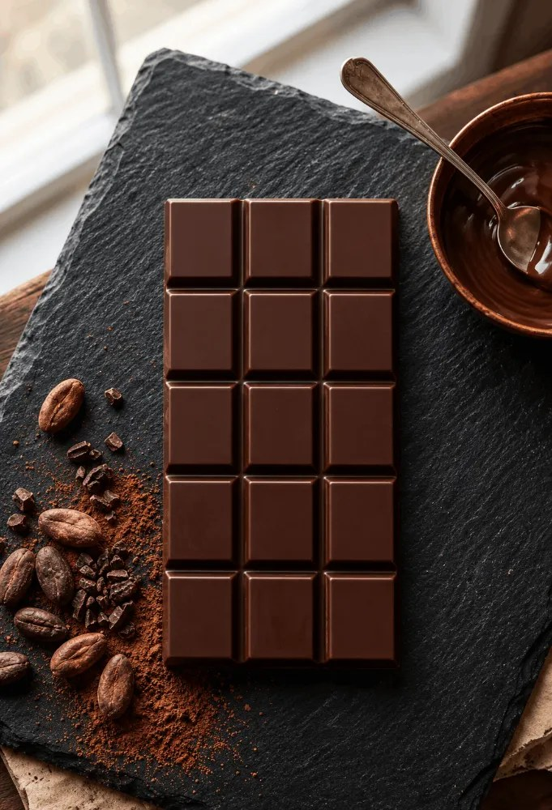

CHOCOLATE RECIPES
Easy Chocolate Desserts to Try at Home

Chocolate can be used in many easy homemade desserts. When you want something delicious without a complicated preparation, a few simple ideas can be a good place to start.
Chocolate-Dipped Fruits
Try dipping fruits in melted chocolate for a simple dessert idea. Allow the chocolate to set before serving.
Simple Chocolate Mousse
Chocolate mousse is another dessert idea for chocolate lovers. Follow a recipe suited to the ingredients you have available.
Quick Chocolate Mug Cake
A chocolate mug cake is an option when you want a small, quick dessert. Use a recipe with suitable measurements and cooking instructions.
Choose Good-Quality Chocolate
Use good-quality chocolate and follow a recipe suited to your ingredients for a more enjoyable result.
Explore Bliss Chocolate for more chocolate inspiration.